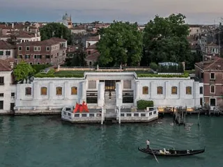

da sab 14 nov a lun 29 mar
Fucina degli Angeli. Peggy Guggenheim e il vetro artistico del Novecento
La Collezione Peggy Guggenheim presenta Fucina degli Angeli. Peggy Guggenheim e il vetro artistico del Novecento , una mostra di ampio respiro che rilegge alla luce di un’accurata ricostruzione storica una delle vicende più visionarie del vetro muranese del secondo dopoguerra…
 Indicazioni
Indicazioni
- Costi e prenotazioni
- Costo non indicato · Prenotazione non indicata
- Programma
- Programma da verificare. Apri la fonte ufficiale per orari e possibili aggiornamenti.
- In caso di maltempo
- Nessuna indicazione specifica pubblicata.
- Note
- Acquisito automaticamente dalla fonte.
L’EVENTO
Descrizione completa
La Collezione Peggy Guggenheim presenta Fucina degli Angeli. Peggy Guggenheim e il vetro artistico del Novecento , una mostra di ampio respiro che rilegge alla luce di un’accurata ricostruzione storica una delle vicende più visionarie del vetro muranese del secondo dopoguerra, restituendo la ricchezza delle sperimentazioni, delle collaborazioni e delle relazioni che hanno lasciato tout court una traccia nella storia dell’arte del secolo scorso. Curata da Cristina Beltrami , la mostra ripercorre l’avventura creativa della Fucina degli Angeli, nata dall’intuizione di Egidio Costantini alla metà degli anni cinquanta. In questa vicenda fu centrale il ruolo di Peggy Guggenheim, che sostenne Costantini nei momenti cruciali e contribuì all’affermazione internazionale del progetto, non solo acquistando numerosi pezzi per la sua collezione, ma ampliando i contatti di Costantini ai maggiori protagonisti dell’arte del Novecento e indicandogli una strategia espositiva frutto della sua ampia esperienza di gallerista e mecenate.
L’esposizione riunisce oltre cento opere provenienti da importanti istituzioni internazionali, tra cui la Fondation Marguerite Arp di Locarno , l’ Historisches Museum di Basilea, l' Augsburg, Kunstmuseum Walter , il MUDAC di Losanna e il Museum of Fine Arts di Boston , a cui si aggiungono opere del Museo del Vetro di Murano , dell’ Archivio Fucina degli Angeli e della Collezione Peggy Guggenheim , oltre che da gallerie e collezioni private.
Accostando le opere in vetro ai disegni, ai dipinti e alle sculture dei medesimi artisti nonché ai materiali d’archivio, il percorso rivela come a partire dagli anni cinquanta Costantini abbia concretamente contribuito ad affrancare il vetro dal dominio delle arti decorative, proponendolo come un materiale del contemporaneo e aprendo le porte delle fornaci muranesi ai protagonisti del panorama artistico del Novecento.
IL PROGRAMMA
Programma e orari
Appuntamenti raccolti dalle fonti elencate. Dove manca un orario, non è ancora disponibile in questa scheda.
Programma pubblicato
- 2026-11-14 — 2027-03-29 ·
INFORMAZIONI UTILI
Prima di partire
- Controllare la fonte prima di partire.
ORGANIZZAZIONE